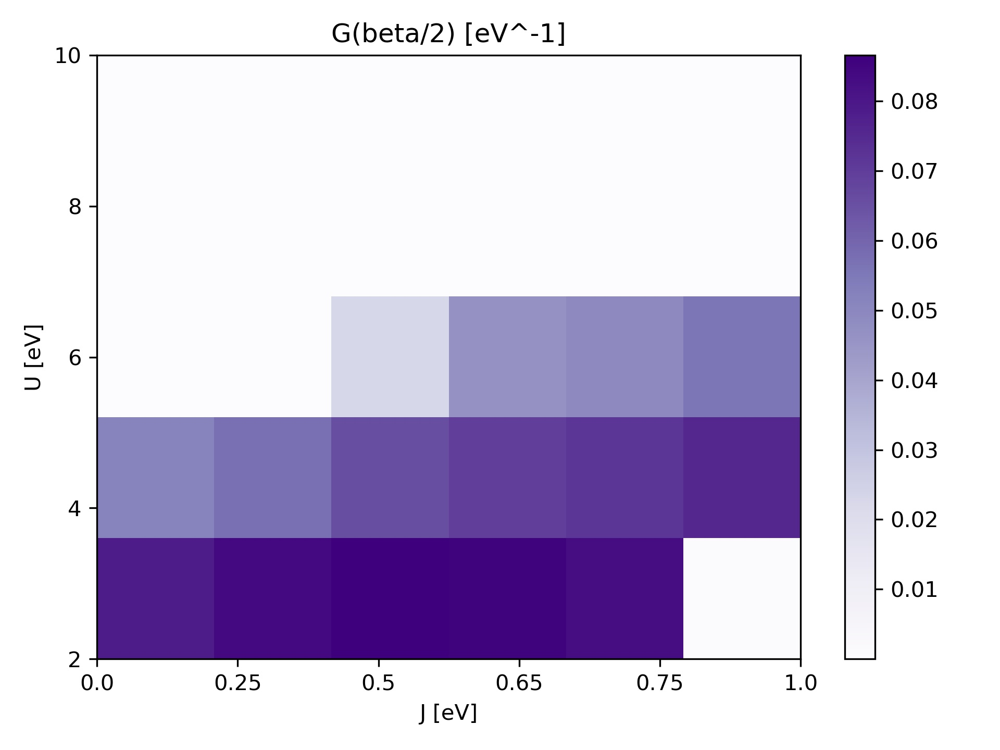
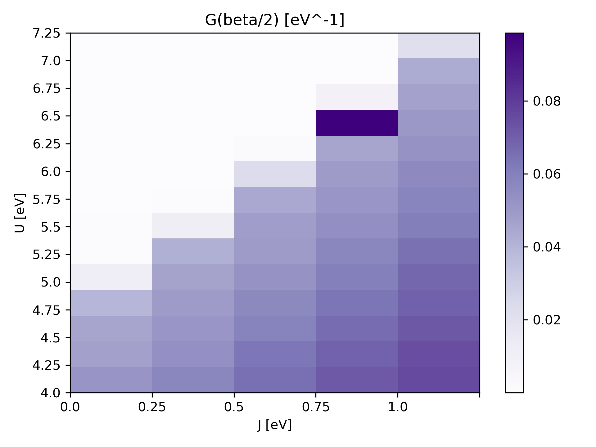
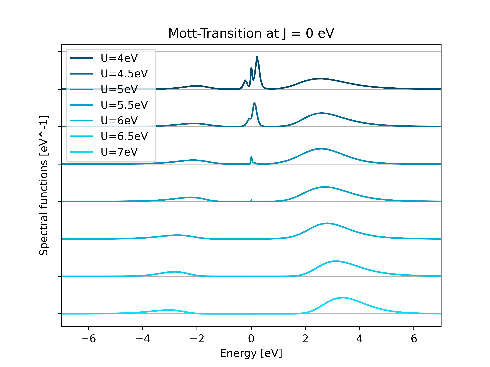

Disclaimer:
Heavy calculations: Current tutorial is best performed on an HPC facility.
1. OS with QE/W90 and cthyb: SrVO3 MIT¶
Hello, welcome to the first part of the tutorial for solid_dmft. Here we will guide to set up and run your first DMFT calculations.
To begin your DMFT journey we will immediately start a DMFT run on Strontium Vanadate (SVO). SVO is a member of a family of material known as complex perovskite oxides.
In these materials, the electrons sitting on the transition metal ions (V in this case) are fairly localized, and the fully delocalized picture of DFT is insufficient to describe their physics. DMFT accounts for the electron-electron interaction by providing a fully interacting many body correction to the DFT non-interacting problem.
1. Starting out with DMFT¶
To start your first calculation run:
mpirun -n 10 python3 ../../run_dmft.py
Once the calculation is finished, inspect the /out/ folder: our file of interest for the moment will be observables_imp0.dat, open the file:
it | mu | G(beta/2) per orbital | orbital occs up+down | impurity occ
0 | 0.00612 |-0.09865 -0.09865 -0.09865 | 0.33326 0.33326 0.33326 | 0.99979
1 | 0.00612 |-0.08200 -0.08277 -0.08239 | 0.31959 0.31995 0.32344 | 0.96298
2 | 0.06456 |-0.06893 -0.06847 -0.06900 | 0.32333 0.31890 0.33503 | 0.97725
3 | 0.08172 |-0.06873 -0.06922 -0.06997 | 0.33488 0.32465 0.32783 | 0.98735
4 | 0.09147 |-0.06892 -0.06967 -0.06909 | 0.32308 0.32812 0.33074 | 0.98194
5 | 0.10094 |-0.06916 -0.06912 -0.06902 | 0.32598 0.33605 0.32722 | 0.98925
6 | 0.10848 |-0.06926 -0.06942 -0.06928 | 0.33359 0.32518 0.33127 | 0.99004
7 | 0.11442 |-0.06931 -0.06961 -0.06954 | 0.32622 0.32944 0.32926 | 0.98492
8 | 0.12258 |-0.06935 -0.06951 -0.06986 | 0.34122 0.33316 0.33515 | 1.00952
The meaning of the column names is the following:
it: number of the DMFT iteration
mu: value of the chemical potential
G(beta/2) per orbital: Green’s function evaluated at \(\tau=\beta/2\), this value is proportional to the projected density of states at the fermi level, the first objective of this tutorial would be to try and drive this value to 0
orbital occs up+down: occupations of the various states in the manifold
impurity occ: number of electrons in each site
2. Looking at the Metal-Insulator Transition¶
Strontium Vanadate (SVO) has 1 electron per d-orbital manifold. In the following steps we will try to drive the system towards a Mott-insulating state.
Inspect the script run_MIT_coarse.sh, we iterate the same type of calculation that was performed in the last step for a series of value of U {2-10} and J {0.0-1.0}.
Run the script, sit back and have a long coffee break, this is going to take a while (about 10 hours on 30 cores).
Once the run is finished run
python3 ./collect_results_coarse.py
The script will produce a heatmap image of the value of G(beta/2) for each pair of U and J. The white area corresponds to an insulating state.

Do you notice anything strange? (hint: look at the bottom right corner and check the output file observables_imp0.dat for U = 2 J=1.0. )
We have seen that for 1 electron per system U and J are competing against each other: larger J favor the metallic state. The coulomb integral U wants to repel neighbouring electrons while J would like to bring electrons together on one site,. When the latter component dominates the resulting phase is known as a charge disproportionated state which is also insulating. What is happening in the bottom right corner is that the J favors here charge disproportionation but the unit cell has a single site, therefore the system has trouble converging and oscillate between a high occupation and a low occupation state.
3. Refinining the diagram¶
In order to get better resolution in terms of the diagram you can run the script run_MIT_fine.sh and plot the result with
python3 ./collect_results_fine.py
The result is also visible here:

4. Plotting the spectral function¶
The spectral function in DMFT represents the local density of states of the impurity site. In order to plot it we need to use one of the scripts that implements the maximum entropy method ( Maxent ), while in the folder run (sub /path_to_solid_dmft/ with where you have installed solid_dmft) :
python3 /path_to_solid_dmft/maxent_scripts/maxent_gf_imp.py ./J0.0/U5/out/SCO.h5
and plot the result by running in the docker container:
python3 read_spectral_function.py

Take care to edit the values of J and U in the python file. What is happing to the spectral function (density of states) as one cranks U up?
5 Visualizing the MIT¶
We will now plot the spectral function at different U values for J = 0.0 eV:
Run the script:
python3 read_spectral_function_transition.py
